Playing with Constructions
Page no. 188 Section 8.1 Think: Imagine marking all the points of 4 cm distance from the point P. How would they look?
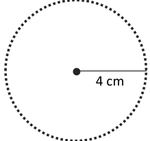
Ans.
On joining, they are forming a circle.
Page no. 191 Section 8.1 Figure it out
Q.1. What radius should be taken in the compass to get this half circle? What should be the length of AX?
Ans. 2 cm. \(AX = 4\) cm.
Q.2. Take a central line of a different length and try to draw the wave on it.
Ans.
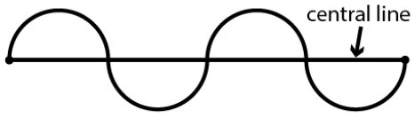
Q.3. Try to recreate the figure where the waves are smaller than a half circle (as appearing in the neck of the figure ‘A Person’). The challenge here is to get both the waves to be identical. This may be tricky!
Ans.
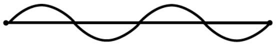
Page no. 193 Section 8.2
Q. Which of the following is not a name for this square?
- 1.PQSR
- 2.SPQR
- 3.RSPQ
- 4.QRSP
Ans. PQSR is not a name for the given square.
Page no. 194 Section 8.2 Figure it out
Draw a rectangle & then leave one dot distance diagonally to place the four smaller squares.
Q.2. Identify if there are any squares in this collection. Use measurements if needed.
Ans. A is a square.
Think: Is it possible to reason out if the sides are equal or not, and if the angles are right or not without using any measuring instruments in the above figure? Can we do this by only looking at the position of corners in the dot grid?
Ans. Yes, In the above figure without measuring one can reason out for equal sides & right
angles.
Yes, the position of the points on the grid paper makes it possible
Q.3. Draw at least 3 rotated squares and rectangles on a dot grid. Draw them such that
their corners are on the dots. Verify if the squares and rectangles that you have drawn satisfy their respective properties.
Ans.
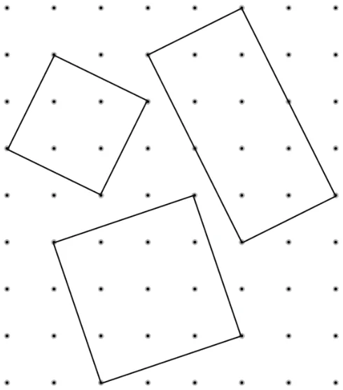
Page no. 197 Section 8.3 Construct Q.1. Draw a rectangle with sides of length 4 cm and 6 cm. After drawing, check if it
satisfies both the rectangle properties.
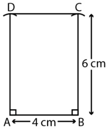
Ans. A = B = C = D = 90
\(AB = CD = 4\) cm & \(AD = BC = 6\) cm.
Q.2. Draw a rectangle of sides 2 cm and 10 cm. After drawing, check if it satisfies both
the rectangle properties.
Ans.
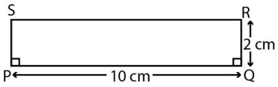
P = Q = R = S = 90 \(PQ = SR = 10\) cm & \(PS = QR = 2\) cm
Q.3. Is it possible to construct a 4-sided figure in which -
- •all the angles are equal to \(90 ^{\circ}\) but
- •opposite sides are not equal?
Ans. No.
Page no. 198 Section 8.4
Q. Is there a shorthand way of writing it down? In all the sentences, only the position of X, Y and the length XY changes. So we could write this as:
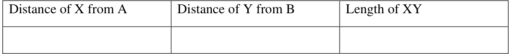
Ans.
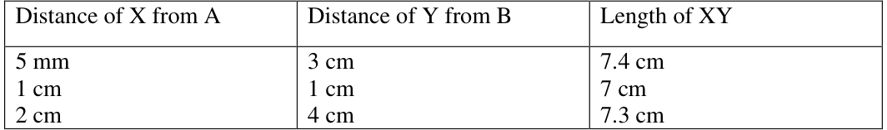
Page No. 199
Q. Have you checked what happens to the length XY when X and Y are placed at the same distance away from A and B, respectively? For example, as in the cases like these:
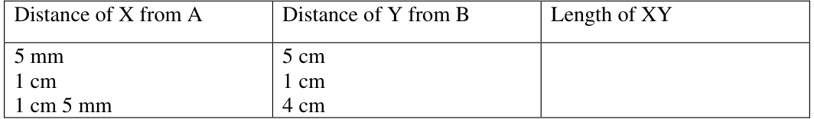
And so on.
Ans.
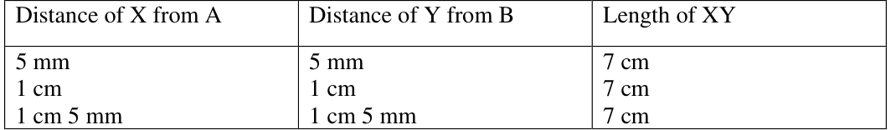
Page no. 199 Q. In each of these cases, observe
- i.how the length XY compares to that of AB and
- ii.the shape of the 4-sided figure ABYX.
Ans. i. \(XY = AB\)
- ii.ABYX is a rectangle
Q. How does the farthest distance between X and Y compare with the length of AC? BD?
Ans. The farthest distance between X and Y is equal to AC or BD.
Construct Q. Construct a rectangle that can be divided into 3 identical squares as shown in the
figure.
Ans. Hint: Take the length of the rectangle three times its breadth.
Page no. 201 Give the lengths of the sides of a rectangle that cannot be divided into -
- •two identical squares;
- •three identical squares
Ans.
- •Lengths of sides of a rectangle that cannot be divided into two identical squares:
Length \(= 4\) cm and Breadth \(= 2.5cm\) (Try for more!)
- •Length of sides of a rectangle that cannot be divided into three identical squares:
Length \(= 7cm\) and Breadth \(= 2cm\) (Try for other possibilities.)
Page no. 201 Q.4. Square with a Hole
Ans. The centre of the circle should be at the meeting point of two line segments connecting
opposite vertices.
Page no. 204 Section 8.5 Explore Q. How should the rectangle be constructed so that the diagonal divides the opposite
angles into equal parts?
Ans. The rectangle should be constructed in such a manner that the two adjacent sides are
equal i.e. the rectangle becomes a square.
Page no. 211 Construct
Q.1. Construct a rectangle in which one of the diagonals divides the opposite angles into
\(50 ^{\circ}\) and \(40 ^{\circ}\) .
Ans.
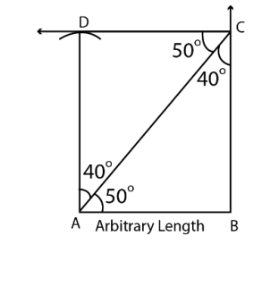
Q.2. Construct a rectangle in which one of the diagonals divides the opposite angles into
\(45 ^{\circ}\) and \(45 ^{\circ}\) . What do you observe about the sides?
Ans.
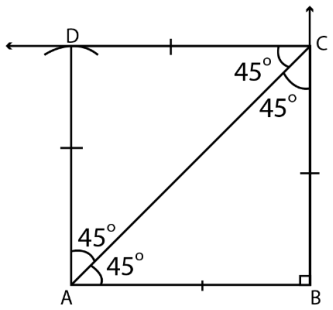
Q.3. Construct a rectangle one of whose sides is 4 cm and the diagonal is of length 8 cm.
Ans.
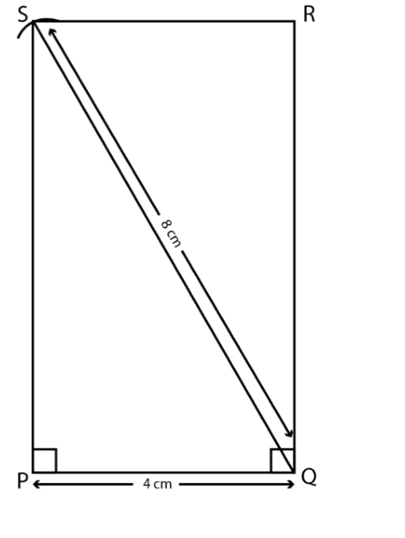
Q.4. Construct a rectangle one of whose sides is 3 cm and the diagonal is of length 7 cm.
Ans.
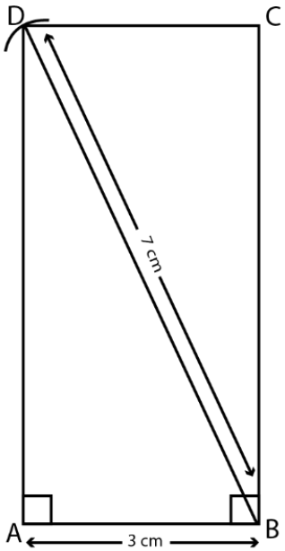
Page no. 215 Construct
Q.1. Construct a bigger house in which all the sides are of length 7 cm.
Ans.
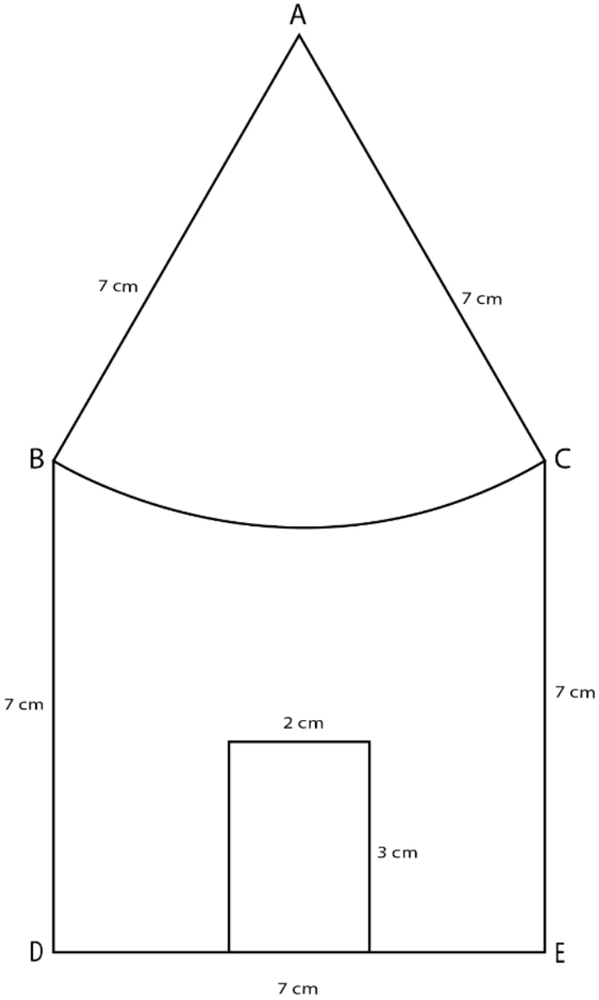
Q.2. Try to recreate ‘A Person’, ‘Wavy Wave’ and ‘Eyes’ from the section Artwork,
using ideas involved in the ‘House’ construction.
Ans.
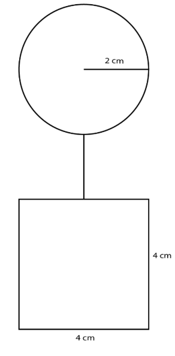
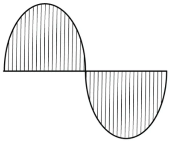
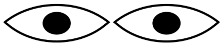
Q.3. Is there a 4-sided figure in which all the sides are equal in length but is not a
square? If such a figure exists, can you construct it?
Ans.
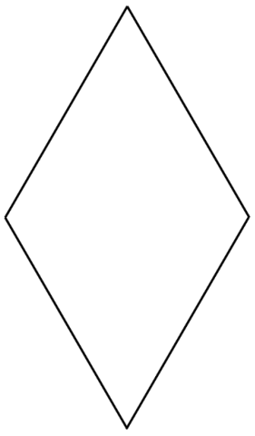